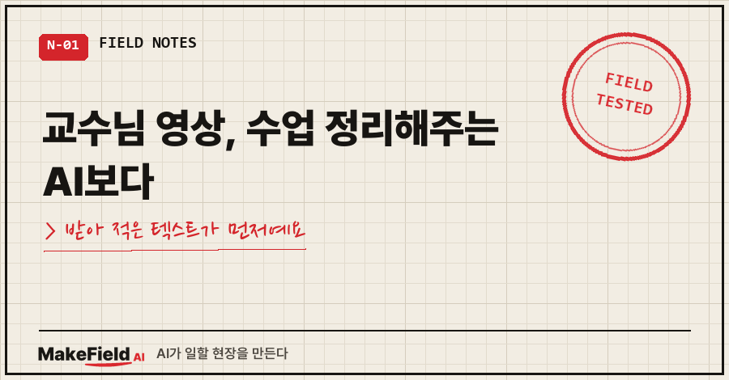
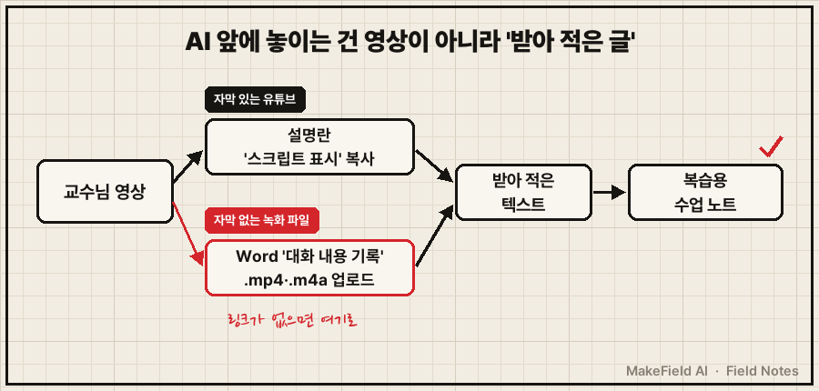
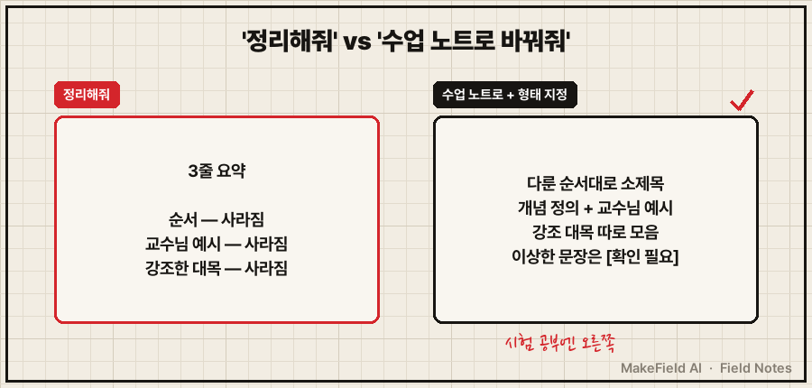
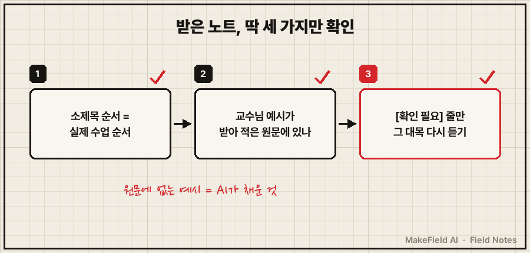

교수님 영상을 수업 정리해주는 AI는 따로 있는 게 아니에요.
영상 속 말을 먼저 글로 바꿔 넣고, "요약" 대신 "복습용 수업 노트" 형태를 콕 집어 시키면 어느 AI든 됩니다.
핵심 한 줄: AI가 정리하는 건 영상이 아니라 '말을 받아 적은 텍스트'라서, 자막 있는 유튜브 강의는 '스크립트 표시'로, 자막 없는 녹화 파일(.mp4 등)은 Word의 '대화 내용 기록'(Microsoft 365 구독 기준 월 최대 300분)으로 먼저 글을 만들어야 합니다(2026년 11월 기준).
수업 녹화본을 AI로 복습 노트로 만들고 싶은데 어디서 막히는지 모르겠는 분을 위한 글이에요.
저는 공장 자동화 현장에서 15년 일한 엔지니어고, 요즘은 좋은 강의 영상을 AI한테 넣어 제 지식으로 만드는 걸 꾸준히 하고 있어요.
그 과정 전체는 이전 글에 적었고, 요점은 '영상 → 자막 텍스트 → AI가 구조화 → 내 지식파일' 네 칸이었어요.
오늘은 그중 수업 영상에서 막히기 쉬운 두 칸, 글로 바꾸기와 지시하기만 파고들게요.
1. 수업 영상을 AI한테 주려다 막히는 장면
막히는 장면은 대개 셋 중 하나예요.
- 교수님 영상이 유튜브가 아니라 녹화 파일이에요. 붙여 넣을 링크 자체가 없죠.
- 유튜브에 올라온 강의인데 설명란을 펼쳐도 '스크립트 표시'가 안 보여요.
- 어떻게든 넣었더니 매끈한 3줄 요약만 와서, 시험 공부엔 하나도 안 쓸모가 없어요.
세 번째는 저도 강의 영상으로 똑같이 겪었어요.
처음에 지시를 대충 줬더니 매끈한 요약만 뱉더라고요.
읽기엔 좋은데, 그 영상에서 제가 진짜 쓰고 싶었던 작업 순서와 판단 기준은 다 빠져 있었어요.
2. 원인: 영상은 '글'이 될 때까지 AI한테 안 넘어가요
첫째·둘째 장면은 원인이 같아요.
유튜브 공식 도움말에 따르면 스크립트는 자막이 있는 동영상에서만 볼 수 있어요(→ https://support.google.com/youtube/answer/15930243?hl=ko).
자막이 없거나 파일로만 받은 녹화본이면, 말을 글로 바꾸는 단계를 내가 직접 거쳐야 하는 거죠.
셋째 장면은 지시 문제예요.
AI는 시키는 형태 그대로 내놔요. "정리해줘"는 AI 입장에서 "짧게 줄여줘"로 읽히기 쉽더라고요.

그림을 글로 풀면, 출발점이 유튜브든 파일이든 AI 앞에 놓이는 건 언제나 '받아 적은 텍스트'예요.
3. 해결: 교수님 영상을 수업 노트로 바꾸는 5단계
제가 직접 해 본 건 유튜브 강의를 자막으로 뽑아 AI에 넣는 쪽이에요.
녹화 파일을 글로 바꾸는 2번은 Microsoft 공식 도움말 그대로 옮겼습니다.
- 자막 있는 유튜브 강의라면 설명란을 펼쳐 '스크립트 표시'를 누르고 스크립트를 복사해요.
- 녹화 파일이라면 Word에서 받아 적게 해요. 새 Edge나 Chrome에서 Microsoft 365에 로그인한 뒤 아래 순서로 갑니다.
홈 > 받아쓰기(드롭다운) > 대화 내용 기록
→ 전사 창에서 [오디오 업로드]
→ 파일 선택 (.wav / .mp4 / .m4a / .mp3)
→ 끝나면 [문서에 모두 추가]- 받아 적은 글을 한 번 훑어요. 전문 용어가 엉뚱한 단어로 적혔으면 아는 데까지만 고쳐요. 자막이 부정확하면 AI도 헷갈리거든요.
- 쓰는 AI 대화창에 텍스트를 통째로 붙이고, 형태를 정해서 시켜요.
아래는 수업 녹화본을 받아 적은 텍스트야.
요약하지 말고, 수업을 다시 안 듣고도 복습할 수 있는 수업 노트로 바꿔줘.
1. 수업에서 다룬 순서대로 소제목을 나눠줘
2. 개념마다 정의 한 줄 + 교수님이 든 예시를 같이 적어줘
3. 교수님이 반복하거나 중요하다고 말한 대목은 따로 모아줘
4. 받아쓰기가 이상해 뜻이 안 통하는 문장은 고치지 말고 [확인 필요]로 표시해줘- 나온 노트를 내 공부 폴더나 AI의 프로젝트(참고 파일) 기능에 넣어 둬요. 다음 질문부터 그 노트를 기준으로 답하게요.

4번은 제가 실제로 걸렸던 곳이에요. "결론 말고 순서와 판단 기준을 살려라"를 써 넣고 나서야 쓸 만한 결과가 나왔거든요. 수업이면 그게 '다룬 순서·정의·예시·강조'로 바뀔 뿐이에요.
4. Word 받아쓰기 쓰기 전에 볼 조건
- 형식: .wav, .mp4, .m4a, .mp3만 돼요.
- 분량: Microsoft 365 구독 사용자는 업로드 오디오를 월 최대 300분까지 받아 적어요. 75분 수업이면 한 달 4개 분량이죠.
- 환경: 새 Edge·Chrome과 인터넷이 필요하고, 한국어를 포함해 80개 이상 로캘을 지원해요.
- 범위: 도움말엔 "현재 상업용 테넌트의 Windows용 Microsoft 365용 Word에서만" 쓸 수 있다고 돼 있어요. 메뉴가 안 보이면 이것부터 확인하세요.
- 주의: 문서 하나에 기록은 하나만 남고, 새로 받아 적으면 이전 기록은 지워져요. 수업마다 새 문서를 여세요.
도움말 안에서도 메뉴 이름이 '대화 내용 기록'과 '전사'로 섞여 나오는데, 같은 기능이에요.
5. 제대로 정리됐는지 확인하는 법

- 소제목 순서가 실제 수업 순서와 같은가.
- 교수님이 든 예시가 받아 적은 원문에 진짜 있는가. 없으면 AI가 채운 거예요.
- [확인 필요] 줄만 영상에서 그 대목을 다시 들어요. 전체를 다시 볼 필요는 없어요.
판서나 화면 위주로 진행된 수업은 말만 받아 적어선 반쪽이에요. 이 방식은 말로 설명이 많은 수업에 제일 잘 맞습니다.
6. 같은 증상, 다른 경우
- 유튜브 강의 영상을 내 AI 지식으로 쌓는 전체 과정: 유튜브 강의 AI로 정리하는 법
- 유튜브인데 자막이 없어 AI가 못 읽을 때(Gemini·NotebookLM 경로): 유튜브 ai정리하는법, 자막 없는 영상은 AI도 못 읽어요
- 녹음 파일을 내 PC에서 직접 받아 적다가 오류가 날 때: faster-whisper metadata_errors 오류
Q. 교수님 영상, 수업 정리해주는 전용 앱을 쓰면 안 되나요?
써도 돼요. 다만 요약 앱은 결론만 남기기 쉬워서, 시험 공부엔 '다룬 순서·예시·강조'를 지정할 수 있는 방식이 더 쓸 만했어요. 앱을 쓰더라도 받아 적은 원문은 같이 받아 두세요.
Q. 녹화 파일을 AI한테 정리시켜도 괜찮나요?
개인이 복습용으로 정리해 보관하는 선까지가 안전해요. 정리본을 다른 사람에게 돌리거나 올리는 건 다른 문제고, 녹화본을 내려받는 것 자체가 허용되는지도 수업 안내를 먼저 보세요.
이번 학기 녹화 강의, 몇 편이나 밀려 있으세요?
제일 앞 한 편만 받아 적어서 수업 노트로 바꿔 보시면, 나머지를 어떻게 할지 감이 바로 와요.
현장 엔지니어가 강의와 자료를 AI로 다루며 고친 방법들은 makefield.ai에도 이어 붙여 두고 있어요.
출처
- Microsoft 지원 — Word에서 녹음 내용 기록(대화 내용 기록 메뉴 경로, 지원 형식, 월 300분, 시스템 요구 사항, 지원 로캘) → https://support.microsoft.com/ko-kr/word/transcribe-your-recordings
- Microsoft Support — Transcribe your recordings(영문판, 조건 대조) → https://support.microsoft.com/en-us/word/transcribe-your-recordings
- YouTube 고객센터 — 동영상 스크립트 보기(자막 있는 동영상만, 설명란 '스크립트 표시') → https://support.google.com/youtube/answer/15930243?hl=ko
태그: #교수님영상수업정리 #수업정리AI #강의정리AI #수업녹화정리 #강의녹화본 #녹화강의텍스트변환 #Word받아쓰기 #대화내용기록 #워드전사 #유튜브스크립트 #AI공부법 #대학생AI활용 #AI요약 #생성형AI #MakeFieldAI